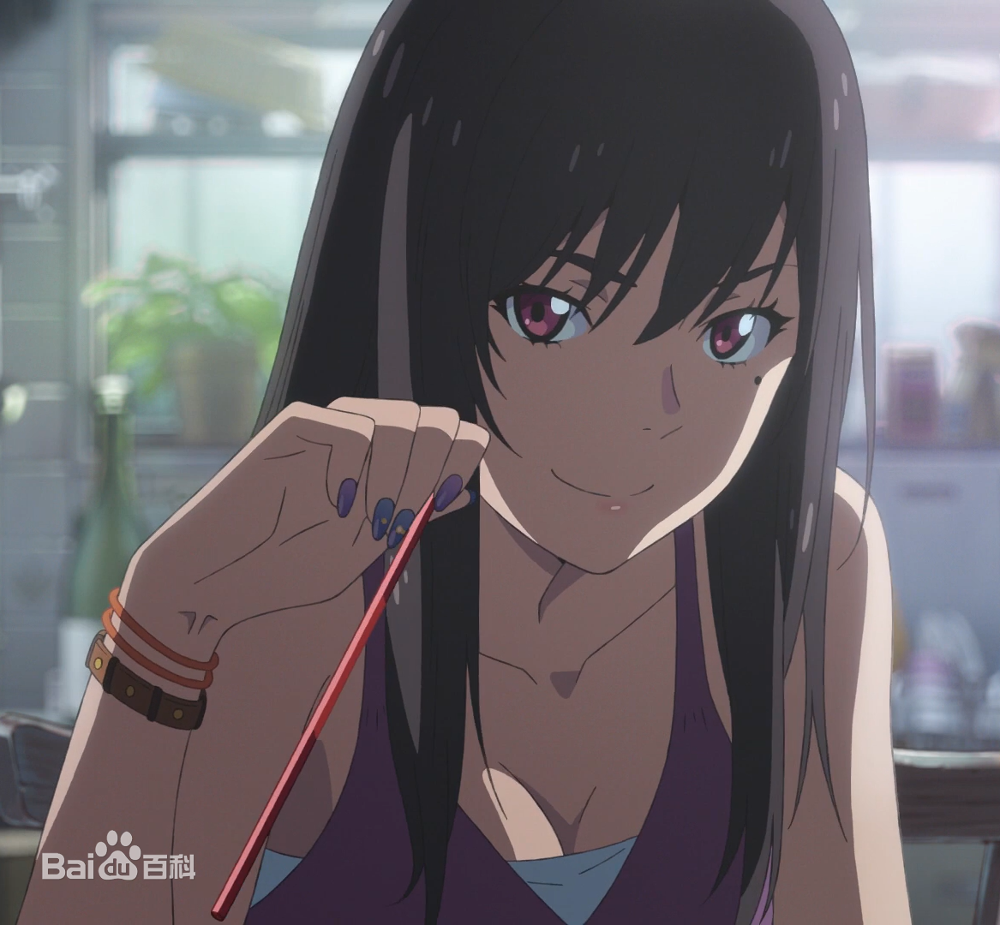

“Try to go into the light”
In the summer of his first year in high school, he ran away from the outlying island and came to Tokyo. But his life soon turns to poverty, and the job he finally finds, after spending every day alone, is writing for a weird supernatural magazine.
As if foreshadowing his fate, it rained for days. At this time, in a bustling corner of the city, Fan Gao met a young girl.
For some reason, young girl Yang vegetable and brother two strong life together. And she has incredible abilities.
"Oh, it's gonna be sunny from now on."
The rain stopped and the streets were bathed in a beautiful light. It is the power to make the sky clear just by praying in your heart——
-
Morishima Fayaka
A high school student who leaves his remote island home in pursuit of the light. He left his island home for Tokyo, where he got a job at Paranormal magazine publishing. But the weather has been bad since he started his new job. It rains every day.
-
Amano Yangna
Yang CAI seems to be able to control the weather. When she prays, the rain stops, and with her folded hands, the water is sucked back into the sky. In a corner of the city, Fan Gao meets Yang CAI
-
Amano nagi
Yang CAI's younger brother, a Grade four student. Because let mori island sail high to recognize his sister amano Yang vegetable love, it was sail high respected as "seniors". Support sister Yang vegetable and sail high two people's love.
-
Kosuke Sukaga
The writer hires Sail Gao and the two meet on a ship bound for Tokyo. Early support Yang CAI sacrifice fate, later was influenced by Fan Gao support him to save Yang CAI. As a supervisor to take care of Yang CAI and her brother two lives.
-

Natsumi Suka
A female college student who works at Suka Office while running around outside to cover stories. Suka Kyusuke's niece, who takes care of Fanco, supports the love between Yang and Fanco. Do not recognize the Yang vegetable sacrifice fate. As a supervisor to take care of Yang CAI and her brother two lives
-
Tachibana Tomi
Old lady, grandma of Tachibana Taki (your name hero). She asked Fan Gao and Yang CAI to help her wish come true. It bears the knot of Mitsuha Miyazui, Taki's wife.